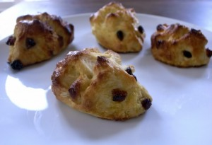
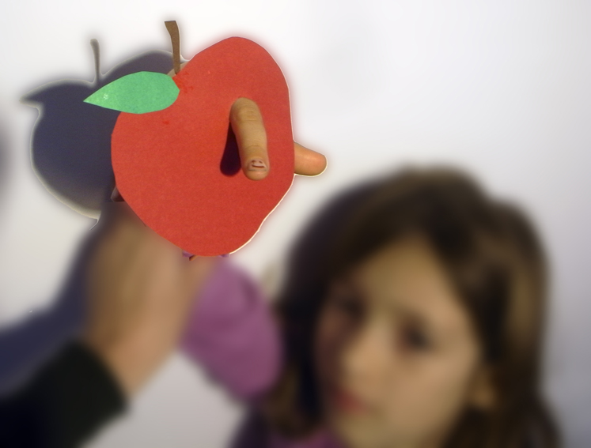
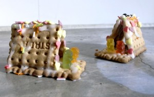
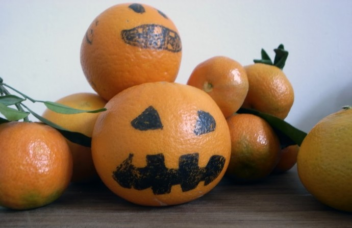
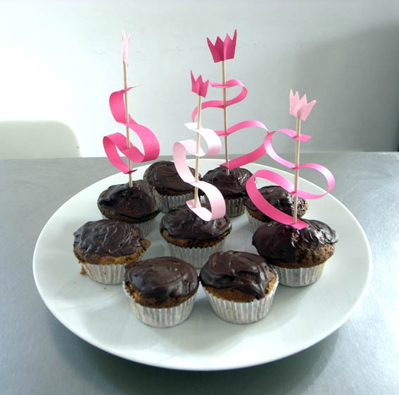
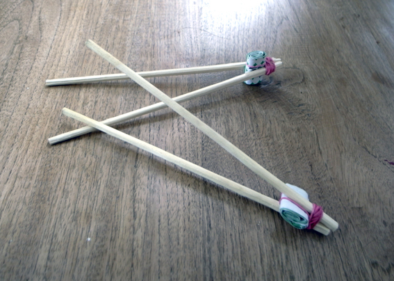
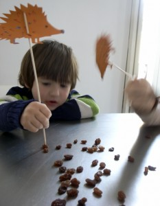

Sólo necesitas masa de levadura dulce y unas pasas para los ojos y la nariz.
Hedgehog
Sweet yeast dough with eyes and nose of raisin.
Igel
Süsser Hefeteig mit Augen und Nase aus Rosinen.

También te puede gustar

Material
El gusano / Worm / Wurm
¿Quien se come una manzana con gusano? Worm Who gonna eat an apple with a worm? Wurm Wer isst einen Apfel mit Wurm?
Leer más →
Comida
Casita de bruja 01 / Whitch house 01 / Hexenhaus 01
Entonces oyeron una voz suave que procedía del interior: ´¿Será acaso la ratitala roe mi casita?Pero los niños respondieron: ´Es el viento, es el viento que…
Leer más →
Comida
Halloween / Halloween / Halloween
Halloween en valencia ¡Aquí tenemos más naranjas que calabazas! Halloween in Valencia Here we have more oranges than pumkins. Halloween in Valencia. Hier haben wir mehr…
Leer más →
Comida
Madalenas / Muffins / Muffins
Madalenas para los reyes Esto es una decoración facilísima para tus madalenas o muffins. King muffins A really easy muffin decoration. Königliche Muffins Eine sehr einfache…
Leer más →
Comida
Palitos / Chopsticks / Stäbchen
Si unes los palitos con una goma (o un cordón) y pones en medio un rollito de papel, puedes conseguir hacer una pinzas ¡y que hasta…
Leer más →
Comida
Erizos 03 / Hedgehog 03 / Igel 03
El que sea más rápido pinchando pasas, va a comer más! This is a race of prick raisins.The ones you prick you can eat. Igel. Dies…
Leer más →